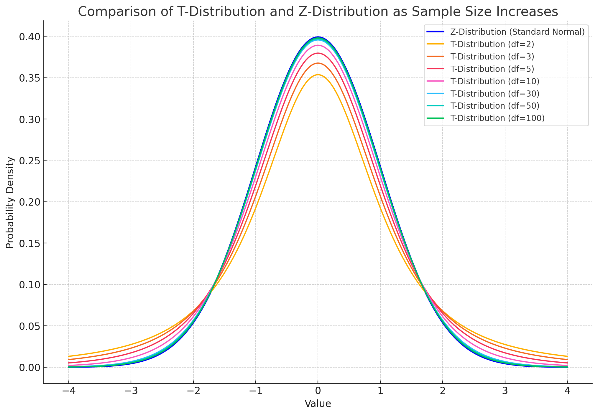

5.31. T Distribution and the t-test#
As the number of samples decreases, we can no longer assume that the central limit theorem holds, and the variance of the mean becomes a worse estimate of the population mean. To correct for this, the T-distribution is used. It contains broader tails and therefor accounts for the added variability when estimating the population standard deviation from small samples. As \(n\) increases, this extra variability decreases, and the T-distribution converges to the Z-distribution.

Z-Distribution (Blue Line): Represents the standard normal distribution with a mean of 0 and a standard deviation of 1.
T-Distributions (Colored Lines): The T-distribution is shown for different degrees of freedom \(n-1\).
For small sample sizes, the T-distribution has heavier tails, indicating more variability and a higher likelihood of extreme values.
As the sample size increases, the T-distribution approaches the Z-distribution, becoming more similar in shape. This reflects that with larger sample sizes, the sample standard deviation \(s\) becomes a better estimator of the population standard deviation \(\sigma\).
5.31.1. Assumptions#
Normality: The population data should be approximately normally distributed, especially important for small samples (n < 30).
Random Sampling: Data must be randomly and independently sampled from the population.
Unknown Population Standard Deviation: The population standard deviation (σ) is unknown and replaced by the sample standard deviation (s).
Independence: Observations must be independent of each other.
Continuous Data: Data should be measured on a continuous scale.
Equal Variances (for Two-Sample Tests): Assumes equal population variances for two-sample t-tests.
Sample Size: Used for small to moderate sample sizes; as n increases, the t-distribution approaches the normal distribution.
5.31.2. The T-Statistic#
The t-statistic is defined very similarly to the z-statistic:
Where: -\( \bar{X}\) is the sample mean. -\( \mu\) is the population mean. -\( S\) is the sample standard deviation. -\( n\) is the sample size.
The sample standard deviation\( S\) is defined as:
5.31.3. Hypothesis testing#
The structure of the hypotheses (H₀ and H₁) in a t-test and z-test is the same. The difference between the tests lies in their use of the standard deviation (whether it’s known or estimated) and the sample size.
5.31.4. Rough Proof of the T-Distribution#
The sample variance\( S^2\) can be expressed in terms of the chi-square distribution:
If\( X_1, X_2, \ldots, X_n\) are independent and identically distributed normal random variables, then: $\( \frac{(n-1)S^2}{\sigma^2} \sim \chi^2(n-1) \)$
5.31.4.1. 3. Expressing\( S\) in Terms of Chi-Square Distribution#
Rewriting the sample variance in terms of the chi-square distribution:
Taking the square root: $\( \sqrt{\frac{(n-1)S^2}{\sigma^2}} \sim \sqrt{\chi^2(n-1)} \)$
5.31.4.2. 4. Connecting to the T-Statistic#
Substitute\( S\) in the t-statistic: $\( T = \frac{\bar{X} - \mu}{S / \sqrt{n}} = \frac{\bar{X} - \mu}{\left(\frac{\sigma}{\sqrt{n}}\right) \sqrt{\frac{S^2}{\sigma^2}}} \)$
Rewriting it further: $\( T = \frac{\left(\frac{\bar{X} - \mu}{\sigma / \sqrt{n}}\right)}{\sqrt{\frac{(n-1)S^2}{\sigma^2(n-1)}}} \)$
5.31.4.3. 5. Introducing the Standard Normal and Chi-Square Distributions#
The numerator\( \frac{\bar{X} - \mu}{\sigma / \sqrt{n}}\) is a standard normal variable\( Z\): $\( Z = \frac{\bar{X} - \mu}{\sigma / \sqrt{n}} \sim N(0, 1) \)$
The denominator\( \sqrt{\frac{(n-1)S^2}{\sigma^2(n-1)}}\) is the square root of a chi-square distribution divided by its degrees of freedom: $\( \sqrt{\frac{(n-1)S^2}{\sigma^2}} \sim \sqrt{\chi^2(n-1)} \)$
5.31.4.4. 6. Final Form of the T-Distribution#
Now we have: $\( T = \frac{Z}{\sqrt{\chi^2(n-1) / (n-1)}} \)$
Where: -\( Z\) is a standard normal random variable. -\( \chi^2(n-1)\) is a chi-square random variable with\( n-1\) degrees of freedom.
This derivation shows that the t-distribution can be expressed as the ratio of a standard normal variable to the square root of a chi-square variable divided by its degrees of freedom. This ratio accounts for the additional variability introduced by estimating the population standard deviation from the sample.